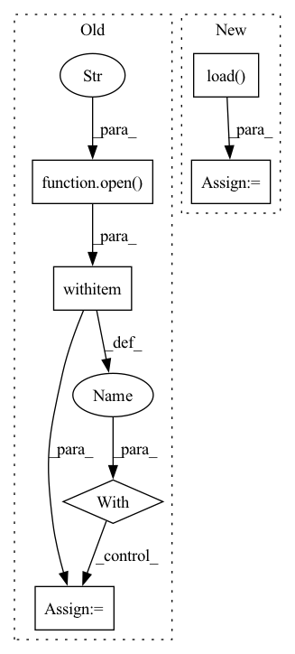

Pattern ID :489
Before Change
test_data_dir = os.path.join("../dataset", dataset, "test/")
train_file = train_data_dir + "train" + str(idx) + "_" + ".json"
with open( train_file, "r") as f:
train_data = ujson.load(f)
test_file = test_data_dir + "test" + str(idx) + "_" + ".json"
with open(test_file, "r") as f:After Change
train_file = train_data_dir + "train" + str(idx) + "_" + ".npz"
with open(train_file, "rb") as f:
train_data = np.load( f, allow_pickle=True) ["data"].tolist()
return train_data
In pattern: SUPERPATTERN
Frequency: 3
Non-data size: 6
Instances Fragment ID: 2739017
Project Name: tsingz0/pfl-non-iid
Commit Name: 4f394efe04f30dbd3cab4278467631854f997903
Time: 2022-01-14
Author: 2719584131@qq.com
File Name: system/utils/data_utils.py
M Class Name: AnonimousClass
N Class Name: AnonimousClass
M Method Name: read_data(3)
N Method Name: read_data(2)
M Parent Class:
N Parent Class:
M File Name: system/utils/data_utils.py
N File Name: system/utils/data_utils.py
M Start Line: 64
M End Line: 75
N Start Line: 63
N End Line: 82
Before Change
Args:
data_path (list): path to pickle file.
with open( data_path, "rb") as data_file:
data = pickle.load(data_file)
self.data = [[torch.from_numpy(u).cuda() for u in s] for s in data]
self.seg_len = seg_lenAfter Change
for data_file in os.listdir(data_dir):
data_path = os.path.join(data_dir, data_file)
raw = pickle.load( open(data_path, "rb"))
data = [torch.from_numpy(d) for d in raw if len(d) > seg_len]
if len(data) < n_utterances:
continue
self.data.append(data) Fragment ID: 2739024
Project Name: yistlin/dvector
Commit Name: 5e47d5f6e72c99fbd81923da2a611ae87d439032
Time: 2020-03-28
Author: yishen992@gmail.com
File Name: modules/utterances.py
M Class Name: Utterances
N Class Name: Utterances
M Method Name: __init__(4)
N Method Name: __init__(4)
M Parent Class: Dataset
N Parent Class: Dataset
M File Name: modules/utterances.py
N File Name: modules/utterances.py
M Start Line: 18
M End Line: 23
N Start Line: 20
N End Line: 34
Before Change
self.list_of_eligible_wave_paths = list(self.list_of_eligible_wave_paths)
self.waves = list()
for path in tqdm(self.list_of_eligible_wave_paths):
with open( path, "rb") as audio_file:
wave_orig, _ = sf.read(audio_file)
self.waves.append(self.preprocess_ap.audio_to_wave_tensor(wave_orig, normalize=True, mulaw=False))
print("{} eligible audios found".format(len(self.waves)))
After Change
self.waves.append(torch.tensor(wave))
torch.save(self.waves, os.path.join(cache_dir, "waves.pt"))
else:
self.waves = torch.load( os.path.join(cache_dir, "waves.pt"), map_location="cpu")
print("{} eligible audios found".format(len(self.waves)))
def cache_builder_process(self, path_split): Fragment ID: 2739028
Project Name: digitalphonetics/ims-toucan
Commit Name: c762d97e04a62c8f3d839cc12c1f3c2b375bde9e
Time: 2021-10-28
Author: florian.lux@ims.uni-stuttgart.de
File Name: TrainingInterfaces/Spectrogram_to_Wave/HiFIGAN/HiFiGANDataset.py
M Class Name: HiFiGANDataset
N Class Name: HiFiGANDataset
M Method Name: __init__(6)
N Method Name: __init__(5)
M Parent Class: Dataset
N Parent Class: Dataset
M File Name: TrainingInterfaces/Spectrogram_to_Wave/HiFIGAN/HiFiGANDataset.py
N File Name: TrainingInterfaces/Spectrogram_to_Wave/HiFIGAN/HiFiGANDataset.py
M Start Line: 23
M End Line: 49
N Start Line: 17
N End Line: 54